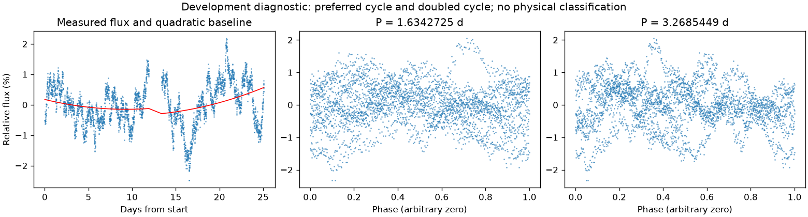
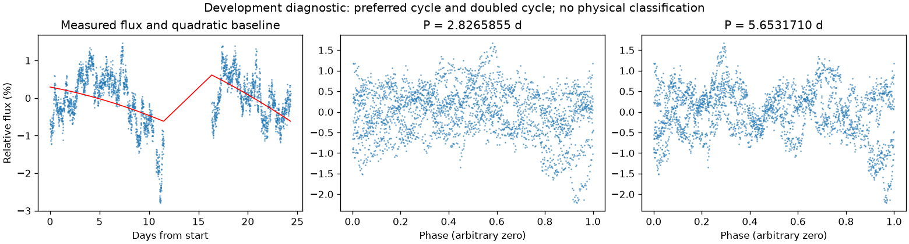

并非所有时段都支持重复变化
第二版周期：None 天；状态：not_established。

左图红线是缓慢基线；右面两图去除该基线。若未通过周期要求，两图只展示得分最高的竞争解释。
| 竞争周期（天） | 交替周期预测改善 | 两组各自改善 | 通过初筛 |
|---|---|---|---|
| 1.6342725 | -9.9% | -7.2% / -14.4% | 否 |
| 2.4582832 | -15.3% | -17.1% / -12.2% | 否 |
| 1.6080726 | -17.1% | -10.7% / -26.5% | 否 |
| 1.2272167 | -18.4% | -28.3% / -13.0% | 否 |
| 6.3251765 | -25.6% | -17.8% / -33.8% | 否 |
| 4.0022799 | -41.9% | -38.0% / -47.3% | 否 |
| 7.4006433 | -52.9% | -94.6% / 12.6% | 否 |
| 3.2014098 | -59.9% | -68.8% / -54.1% | 否 |
“预测改善”衡量用一组周期的形状预测另一组，比只有缓慢基线好多少；负数表示更差。搜索和预测共用了资料，因此这不是可信概率，也不是独立验证。
第二版周期：None 天；状态：not_established。

左图红线是缓慢基线；右面两图去除该基线。若未通过周期要求，两图只展示得分最高的竞争解释。
| 竞争周期（天） | 交替周期预测改善 | 两组各自改善 | 通过初筛 |
|---|---|---|---|
| 2.8265855 | -17.2% | -27.2% / -9.8% | 否 |
| 2.7310908 | -21.0% | -14.1% / -36.2% | 否 |
| 2.7718553 | -23.0% | -25.5% / -19.5% | 否 |
| 3.3926827 | -29.4% | -37.1% / -21.1% | 否 |
| 1.3846670 | -30.1% | -34.1% / -25.3% | 否 |
| 5.5448346 | -65.5% | -49.3% / -80.8% | 否 |
| 5.5364252 | -65.7% | -49.5% / -81.3% | 否 |
| 4.2393692 | -86.4% | -85.3% / -88.1% | 否 |
“预测改善”衡量用一组周期的形状预测另一组，比只有缓慢基线好多少；负数表示更差。搜索和预测共用了资料，因此这不是可信概率，也不是独立验证。